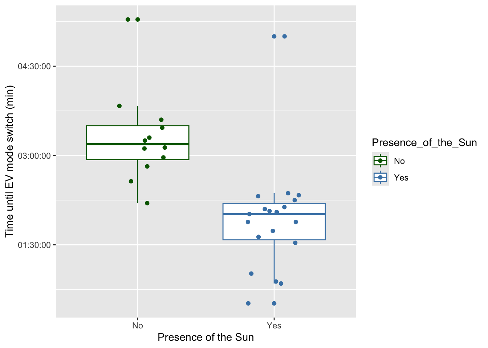
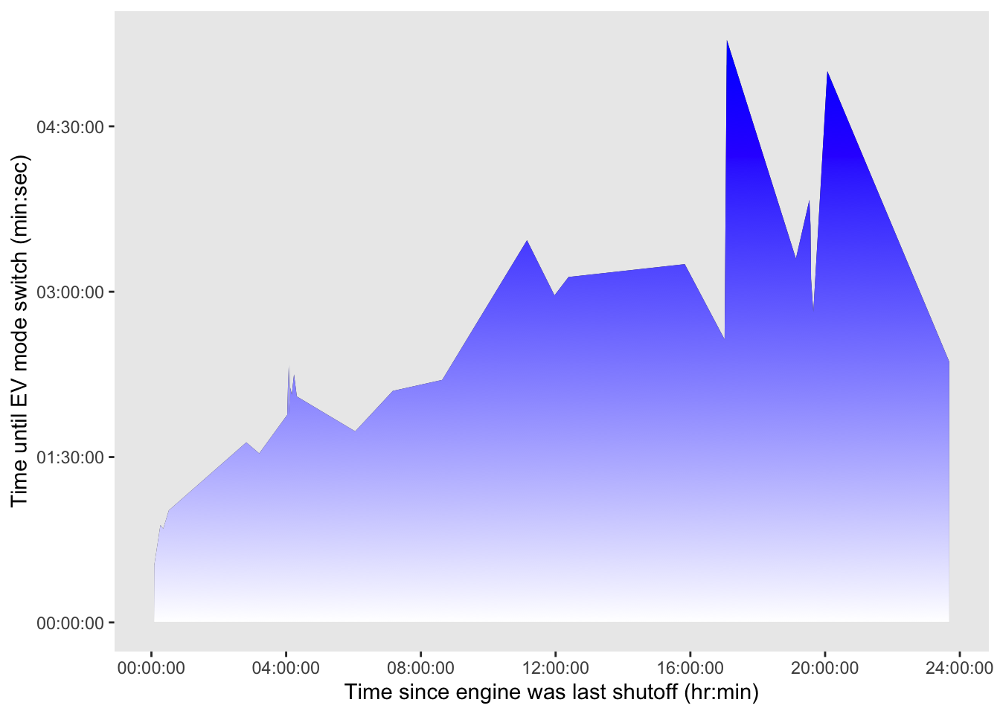

# insert code to read in packages here
library(tidyverse)
library(janitor)
library(here)
library(flextable)
library(ggpattern)
# insert code to read in your data here
ev_data <- read_csv("/Users/admin/Documents/github/ENVS-193DS_homework-03/data/EV_Mode_2.csv")ENVS-193DS_homework-03
Quarto
Quarto enables you to weave together content and executable code into a finished document. To learn more about Quarto see https://quarto.org.
Set Up
Problem 1: Personal Data
a. Data summarizing
My data can be summarized by counting observations, which are the times it takes for the engine to switch to EV modem and comparing between two groups, which are the sun being out or not being out. This summary is appropriate because the presence of the sun in the sky is a proxy for average outside air temperature and in turn the car engine, which is either cold when the sun is not present or warm when it is.
b. Visualization
ggplot(data = ev_data, # use the ev_data data frame
aes(x = Presence_of_the_Sun, # Sun presence on the x-axis
y = EV_switch_time, # time until ev switch on the y-axis
color = Presence_of_the_Sun))+ # color by if sun is present
geom_boxplot()+ # first layer is the boxplot
geom_jitter(width = 0.2, # jitter in the x-axis
height = 0)+ # no jitter in the y-axis
labs(x = "Presence of the Sun", # relabeling the x-axis
y = "Time until EV mode switch (min)")+ #relabeling the y-axis
scale_color_manual(values = c("Yes" = "steelblue", # change the default color
"No" = "darkgreen")) 
c. Caption
Figure 1. Time it takes for hybrid vehicle to switch to EV mode is greater when the Sun is not out. The time it takes for a hybrid vehicle’s engine to switch to EV mode is significant. Blue represents when the Sun is in the sky while green represents when it is not. Data source: Cardoso, J. 2025.
d. Table presentation
ev_clean <- ev_data |>
group_by(Presence_of_the_Sun) |>
select(Presence_of_the_Sun, EV_switch_time)
ev_table <- flextable(ev_clean)
ev_tablePresence_of_the_Sun | EV_switch_time |
|---|---|
Yes | 02:06:00 |
No | 03:08:00 |
Yes | 02:20:00 |
Yes | 01:01:00 |
Yes | 00:31:00 |
No | 03:15:00 |
Yes | 02:19:00 |
No | 03:50:00 |
Yes | 02:04:00 |
Yes | 01:44:00 |
No | 03:28:00 |
No | 05:17:00 |
Yes | 02:08:00 |
Yes | 01:32:00 |
No | 02:58:00 |
No | 02:12:00 |
Yes | 01:53:00 |
No | 03:36:00 |
No | 03:18:00 |
Yes | 01:53:00 |
No | 03:07:00 |
Yes | 02:01:00 |
Yes | 00:51:00 |
No | 02:34:00 |
No | 02:49:00 |
Yes | 02:15:00 |
Yes | 02:22:00 |
Yes | 02:03:00 |
Yes | 01:38:00 |
Yes | 00:53:00 |
Yes | 05:00:00 |
Problem 2: Affective visualization
a. Description
An affective visualization for my data can look like a connected scatter plot, with the time since the engine was last shutoff on the x-axis and the time it takes the engine to switch to EV mode on the y-axis. The graph would be stylized with the area under the connected scatter line being filled with a blue to orange gradient. The color would symbolize the time of day the data was taken, with blue symbolizing times where the Sun was not out and orange symbolizing when the Sun was out.
b. Sketch
c. Draft
ggplot(data = ev_data,# use the ev_data data frame
aes(x = Time_passed_since_shutoff,# temperature on the x-axis
y = EV_switch_time))+ #time until ev switch on the y-axis
geom_area_pattern(data = ev_data,
pattern = "gradient",
pattern_fill = "white",
pattern_fill2 = "blue")+
labs(x = "Time since engine was last shutoff (hr:min)",# relabeling x-axis
y = "Time until EV mode switch (min:sec)")+ #relabeling y-axis
theme(panel.grid.major = element_blank(), # remove gridlines
panel.grid.minor = element_blank())
d. Artist Statement
Content: I am showing that the time the engine takes to switch to EV mode increases as the time the engine was last shutoff increases and the time of day increases. Influences: The gradient used in Trends in Global Methane Emissions on the Environmental Graphiti page influenced my choice in using the gradient color to represent a time of day when the Sun is not out. Form of the work: I chose to use code to make my draft. Process: I took code from homework 2, updated it with my new data, and played around with the gradient coloring.
Problem 3: Statistical critique
a. Revist
ANOVA and Least Significant Difference are the tests included in this paper. The response variables are alkaloid content and growth parameters (height, thousand-seed weight, etc.). The predictor variable is nitrogen dosage.
b. Visual clarity
The table has good visual clarity representing the data of the underlying tests. It shows the predictor variable, the nitrogen doses, in the first column while showing the response variables in the rest of the columns to the right, such as alkaloid content and growth parameters. Two years of data are shown, with the last row in each respective year showing the Least Significant Difference value for each parameter.
c. Aesthetic clarity
The authors handled “visual clutter” acceptably as there are horizontal lines that draw the eye to the rows of means, LSD, and response variables of each respective year.
d. Recommendations
Some additional spacing between the two years would be beneficial to drawing the eye to each respective year as the current amount of space makes it hard to separate the table for each respective year.